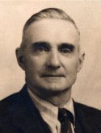

GMBH Tree - Family Card
GMBH Tree - Family Card
Louis Désiré Denomme(2 Mar 1832 - 3 Mar 1916)Joseph Durand(1847 - 27 Sep 1890)
Louise Sarah (Sarah) Ducharme(2 Dec 1837 - 17 Jan 1885)Julienne Mireau(19 Nov 1848 - 27 May 1908)
m. 3 May 1898, St-Pierre-aux-Bouleaux, St-Joseph, Hay Twp, Huron Co, Ontario, Canada


b. 28 Feb 1876
d. 28 Jun 1943, Clinton, Ontario, Canada
br. 30 Jun 1943, Drysdale, Ontario, Canada
occ. Farmer
edu.
rel.
bp. 11 Feb 1877, Ontario, Canada
cen. 1901, Hay Twp, Huron Co, Ontario, Canada

b. 17 Oct 1874, Drysdale, Ontario, Canada
d. 24 Mar 1948, St. Joseph, Huron Co, Ontario, Canada
br. St. Joseph, Huron Co, Ontario, Canada
occ.
edu.
rel.
bp.
cen. 1901, Hay Twp, Huron Co, Ontario, Canada
Children
Leon Hermidas Denomme(11 May 1899 - 20 Nov 1994)
> Laurent Charles (Laurence) Denommé(25 Aug 1900 - 17 Jun 1983)
Napoleon Louis Denomme(7 Aug 1902 - 8 Sep 1975)
Adeline Marie Denomme(13 Aug 1904 - 2007)
Joseph Victor Denomme(5 Aug 1906 - 7 Dec 1980)
Athenese Philip Denomme(1 May 1908 - 4 Aug 1986)
Telesphore Denis Denomme(6 Apr 1910 - 17 Mar 1989)
Raymond Narcisse Denomme(13 Dec 1911 - 2 Jan 1992)
Leona Ann Denomme(29 Jan 1914 - 4 Mar 1998)
Florence Denomme(16 Aug 1916 - 19 Aug 1986)
John Arthur Denomme(2 Sep 1918 - 30 Jun 1994)
Anthony Marcel Denomme(28 Mar 1922 - 14 Aug 2003)